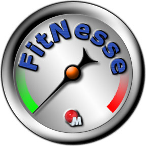
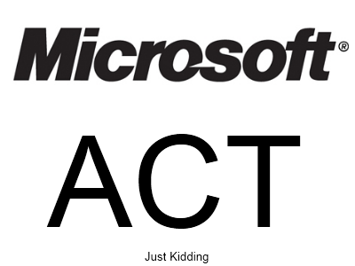
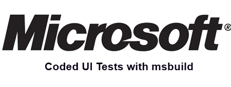

Selenium 101.3: Practical Functional Testing Techniques

Brad Wilkening
http://www.NotBrad.com
@bwilken on the Twitter
Overview
- QA Testing Paradigms
- What else is out there for functional testing? : Comparison
- Selenium Components
- Overview - How do these things tie together?
- IDE
- RC
- Server
- Cross Browser Goodness
- Cloud Testing
- Browser Modes With RC/Server
- Practical Usage
- Functional Testing Paradigms
QA Testing Paradigms
"We just kinda play with it"
QA Testing Paradigms
"We let the users test by releasing"
|
|
Things end users users are really good at.
- Testing
- Designing User interfaces
- Amateur nuclear engineering
- Competitive Skeet Shooting
- Are you still reading this?
- Honestly, this whole slide is just scary
|
QA Testing Paradigms
"Case Testing"
QA Testing Paradigms
"Story Testing"
The same thing as test casing but includes congruence between Users and Testing
Software Quality
What is most important to you?
Understandability, Completeness, Conciseness, Portability, Consistency, Maintainability, Testability, Usability, Reliability, Efficiency, Security
- Time to market
- Who you are marketing your software to?
- How much resources [$$$] you have to work with?
- How important the image of the product is?
Tools: BDD


|
And many others that need logos: Aubergine, NBehave, MSpec, NSpec, StoryQ . .
Tools: Functional



|
Selenium Components
- IDE
- Add on for FireFox to "Record" tests.
- Server
- Highjacks the browser
- Remote Control consumes this service [and cannot function without it]
- Remote Control
- Remote control is the binary that you reference to use the server
Selenium Components - IDE
Selenium Components - IDE
- Test Case
- Test Suite
- Test Runner
- Saving Tests for later
What doesn't record well?
- Javascript select OnChange Event bindings
- Drag and drop between divs
- Doesn't account for Ajax call "latency"
Selenium Components - Server
How to start the server
Check that you have java installed. Make sure it has one that says "Runtime Environment" in the title.
C:\>java -version
java version "1.6.0_20"
Java(TM) SE Runtime Environment (build 1.6.0_20-b02)
Java HotSpot(TM) 64-Bit Server VM (build 16.3-b01, mixed mode)
Selenium Components - Server
How to start the server
Open the cmd prompt as Administrator. Start the server.
C:\Selenium\RC\selenium-server-1.0.3>java -jar selenium-server.jar -log -selenium.log
18:47:12.279 INFO - Writing debug logs to -selenium.log
18:47:12.287 INFO - Java: Sun Microsystems Inc. 16.3-b01
18:47:12.295 INFO - OS: Windows 7 6.1 amd64
18:47:12.390 INFO - v2.0 [a2], with Core v2.0 [a2]
18:47:13.770 INFO - RemoteWebDriver instances should connect to: http://127.0.0.1:4444/wd/hub
18:47:13.776 INFO - Version Jetty/5.1.x
18:47:14.003 INFO - Started HttpContext[/selenium-server/driver,/selenium-server/driver]
18:47:14.115 INFO - Started HttpContext[/selenium-server,/selenium-server]
18:47:14.144 INFO - Started HttpContext[/,/]
18:47:14.812 INFO - Started org.openqa.jetty.jetty.servlet.ServletHandler@2996c1b0
18:47:14.833 INFO - Started HttpContext[/wd,/wd]
18:47:14.926 INFO - Started SocketListener on 0.0.0.0:4444
18:47:14.942 INFO - Started org.openqa.jetty.jetty.Server@22998b08
Selenium Components - Server
Selenium Components - Remote Control
Selenium Components
|
|
What do I do with the code generated by IDE ?
- Delete it and re-record it 1000 times
- Chop it up and make it reusable
- Let it teach you the ~132 methods of a single object
- Learn xpath better than you ever wanted to
|
Handy methods of the Selenium object
- IsElementPresent
- IDE Does not account for Ajax latency
- Can be used to assert the existance of an element after an action
- DragAndDrop
- Type
- Click
- getEval
- Good for running things that didn't record appropriately
- Gives you the ability to log details about the test failures
Cross Browser Goodness
selenium = new DefaultSelenium("localhost", 4444, "*iexplore", TestTargetUrl);
Cross Browser Goodness
public sealed class BrowserTypes
{
private BrowserTypes() { }
public static readonly string Firefox = "*firefox";
public static readonly string Firefox2 = "*firefox2";
public static readonly string Firefox3 = "*firefox3";
public static readonly string Firefox4 = "*firefox4";
public static readonly string Chrome = "*chrome";
public static readonly string IE = "*iexplore";
public static readonly string Opera = "*opera";
}
Profiles are a pain.
How does Brad use Selenium ?
- Record tests
- Delete the code
- Rinse repeat
- Chop up the recorded code
- Organize it as one test per case/story
- Open specific url
- Perform test specific action
- Assert expected navigation
selenium.Open("/");
selenium.Click("link=Crew");
selenium.WaitForPageToLoad("5000");
var uri = new Uri(selenium.GetLocation());
Assert.AreEqual(uri.LocalPath, "Crew");
Functional Testing Paradigms
Start with a "bare" database for every test cycle
- Easier to implement and maintain
- More consistent test execution
- Fewer problems with indexed elements
Functional Testing Paradigms
Tests that can be run more than once
- More versatile
- More likely to break due to invalid indexed elements
- Higher maintenace costs
selenium.Click("//div[@id='listItems']/table/tbody/tr[5]/td[3]/div");
Can I just decorate my elements with Ids so that it doesn't index it?
Functional Testing Paradigms
Tests to be run on a copy of all customer tenants
- Very effective
- Has to integrate with application's crud repositories
- Highest maintenance costs
- Highest creation costs
Functional Testing Paradigms
Hand write tests to cover defects
Why wouldn't you do this?
- You think this is overkill
- You write bug free code
- You are scared of the insane complexity of selenium
- You aren't concerned about stability
Functional Testing Paradigms
Write tests to validate code quality
This topic was added to allow us to consider the other applications for Functional testing tools. I digress.
Functional Testing Paradigms
Which one is appropriate for me ?
- Product software company
- Line of business applications
- Time to market
BONUS: Selenium Cloud
Demo*
What are the benefits of using a selenium cloud service ?
- You don't have to maintain your target environments [Browsers * OperatingSystems * BrowserVersions]
- It is really easy to implement [I think]
- Better coverage